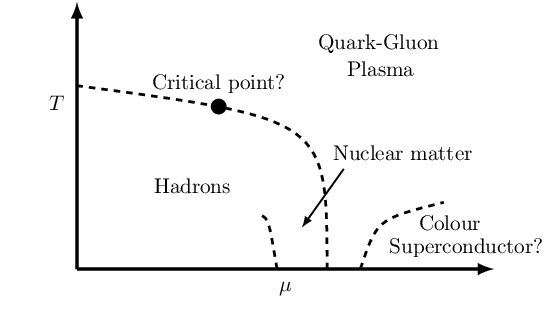
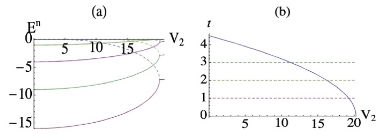
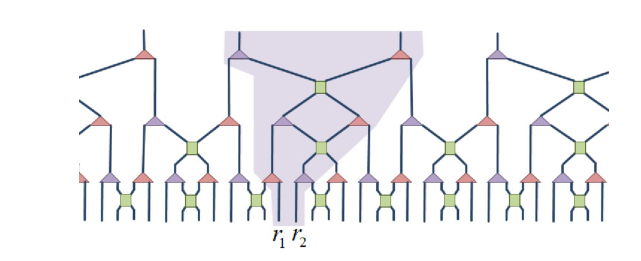

Find my Masters thesis and PhD thesis.
I have a broad interest in quantum systems and quantum field theory. Most of my research has revolved around strongly correlated quantum systems and numerical methods to extract properties of them.
The theory of quantum electrodynamics has been one of the most successful theories of physics in the 20th century. It describes how light and matter interact and is the first theory where quantum mechanics and special relativity have been unified. It describes physics outside of an atomic nuclii. However, a description of what goes inside an atomic nucleus is more complicated. The widely accepted theory is that the interactions inside the nucleus are governed by the strong force described by a theory called Quantum Chromodynamics (QCD). QCD describes interactions between quarks and gluons. At low temperatures, QCD is in the hadronic (protons and neutrons are common examples of hadrons) or confined phase. It is conjectured that as temperatures rise (about 155MeV) the quarks and gluons deconfine to form the quark-gluon plasma (QGP). This confinement and deconfinement transition has been of great theoretical interest over the past three decades. It has been postulated that the QGP can studied experimentally in heavy ion collisions at Relativistic Heavy Ion Collider (RHIC) in Brookhaven National lab or CMS, ATLAS and ALICE at CERN.

Calculating the properties of the QGP from first principles is quite challenging as the standard perturbative methods of computing the path integral fail due to strong coupling of QCD. Thus, an effective field theory framework is used which describes the physics through the static quark anti-quark potential. Due to advancement in computing power in recent years, lattice QCD simulations have achieved great success in understanding QCD in the strong coupling regime. The basic idea of Lattice QCD is to use Monte-Carlo acceptance sampling to evaluate the path integral and compute correlation functions. One cannot however, do this in real-time as the complex probability weight makes Monte-Carlo sampling hard. Thus, these calculations are performed in Euclidean or Imaginary time. One can then compute real-time properties from the Euclidean correlator through the Spectral function. However, computation of this spectral function from a finite set of noisy data points is an ill-posed inverse problem. My PhD thesis revolves around trying to address this ill-posed problem and discusses pathways towards resolving the puzzle of the static quark potential.
The interactions of heavy quark and anti-quark pair are essential in understanding the primordial state of matter created in heavy-ion collisions, the quark-gluon plasma . These interactions can be studied through a complex potential between these static colour sources in the presence of a thermal medium. Together with my supervisor Alexander Rothkopf, Rasmus Larsen (postdoc at University of Stavanger) and colleagues at the HotQCD collaboration we studied this potential using lattice QCD simulations using the Highly Improved Staggered Quark(HISQ) action. We computed the Wilson Line correlator in Coulomb gauge and extracted the potential using four different methods; Gaussian fits, HTL-inspired fits, the Pade and Bayesian reconstruction, all having a different set of assumptions. The BR-method was rendered inapplicable due to the presence of non-monotonicity in effective masses at higher temperatures. We found that contrary to previous studies, the real-part of the potential showed no temperature dependence from all methods except for the HTL-inspired fits. Check out the full manuscript for more details.
Discoveries from the heavy quark potential on HISQ lattices were quite puzzling and were contrary to previous studies and general intuition. Thus, my supervisor Alexander Rothkopf and I decided to reinvestigate the interactions between static color sources in a finite temperature gluonic medium using both high resolution isotropic and anisotropic quenched lattice QCD ensembles. We generated configurations using the naive Wilson action to avoid any artifacts of non-monotonicity and making the BR-method applicable. Using the raw unmodified lattice data, all applicable methods show clear signs of screening of the real part of the potential beyond the transition temperature. After applying a subtraction procedure featured in the HISQ study, we find however that screening disappears from the extracted potential. Check out the full manuscript for more details.


We study the real discrete spectrum of complex PT-symmetric Scarf-II potential. If the strength (λ) of the imaginary part of the potential is varied smoothly some pairs of real eigenvalue curves can intersect and cross each other at λ = λ∗. We also show that the corresponding eigenstates at λ = λ∗ are identical or linearly dependent denying degeneracy in one dimension. Other pairs of eigenvalue curves coalesce to complex-conjugate pairs completing the scenario of spontaneous breaking of PT-symmetry at λ = λc. This is in start contrast to what one sees in one dimensional Hermitian potential. Check out the full manuscript for more details.

Tensor network states are wave functions of quantum many body wave functions used in the study of quantum many body systems. They have become powerful tools to analyse low energy properties of many body systems on a lattice. One such tensor network method is called the Multi-scale Entanglement Renormalization Ansatz (MERA). As the name suggests MERA is a renormalization group method to extract properties of many body systems. I implemented a modified MERA to extract central charge and scaling dimensions of a 1D bilinear biquadratic critical spin chain. Check out the slides of a presentation that I gave during a gradtalk seminar at Stony Brook University.
